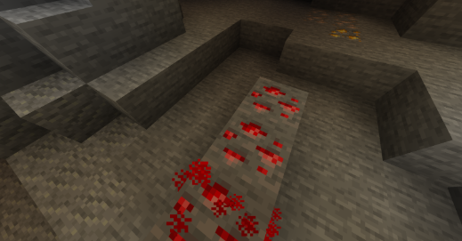
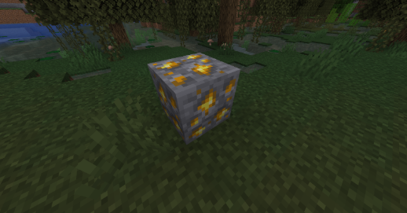

Ores
- Coal: Coal spawns from the y range from 0 to 320. It is in the overworld and is a needed material for spelting.
- Copper: Copper spawns from the y range from -16 to 112. It is in the overworld and in a very usful material.
- Iron: Iron spawns from the y range from -64 to 320. It is in the overworld and is one of the most needed ores in minecraft. It is usful for armor and tools.
- Gold: Gold spawns from the y range from -64 to 256. It is in the overworld and is usful for golden apples and trading.
- Diamond: Diomond spawns from the y range from -64 to 16. It is in the overworld and is one of the most needed ores, or the most needed ores in the game. It is used for afromor and tools.
- Lapis: Lapis spawns from the y range from -64 to 64. It is in the overworld and is very importnt for inchanting.
- Redstone: Redstone spawns from the y range from -64 to 16. It is in the overworld and is used for traps and other machines.
- Emerald: Emerald spawns from the y range from -16 to 320. It is in the overworld and is one of the rarest idems to get.
- Ancient Debris: Ancient Debris spawns from the y range from 11 to 119. It is in the underworld and is used to make the best armor in the game.
- Nether Quartz: Nether Quartz spawns from the y range from 10 to 125. It is in the underworld and is one of the most usless ores in the game.

Roboflow universe - CC Attribution

Roboflow universe - CC Attribution
Home Page
Biomes Page
Ores Page
Mobs Page
Tools Page